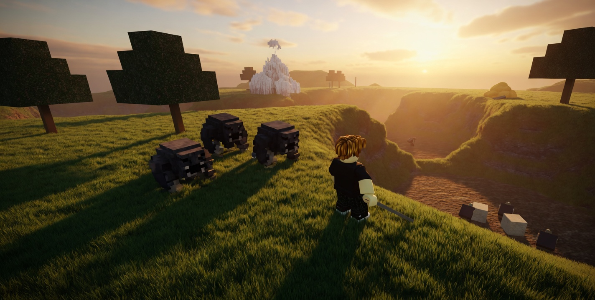
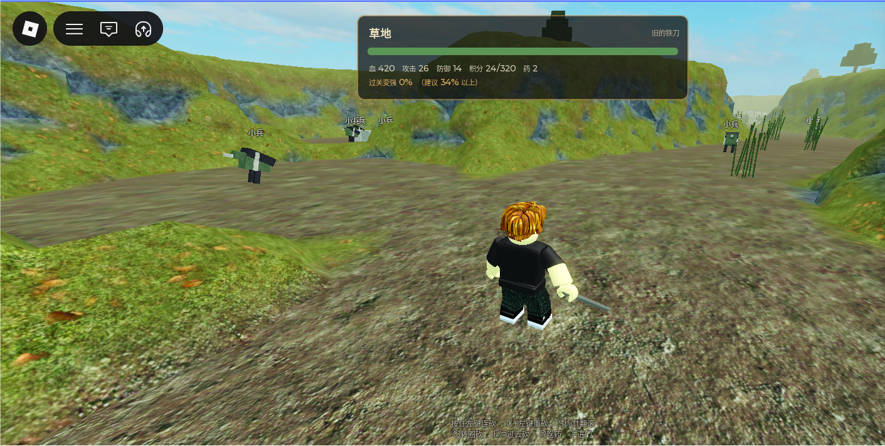
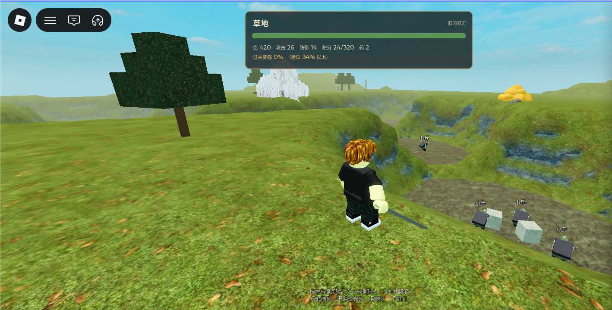
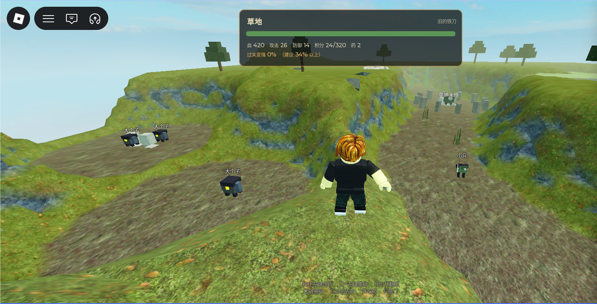

区域内属性锁定。成长只发生在出区结算：清得越干净，下一区越从容。
第一区是草地。玩家沿主干遭遇小兵、大个子与区域首领，旁路的刷新怪提供额外积分。积分比例约百分之三十四以上，才开始给出装备档位——界面上的「过关变强」即此。
玩家与敌人按同一倍率逐区放大，保底通关面对的相对强度不随区域漂移。成长收益压在生存一侧，避免满配把清怪速度拉得过开。
- 类型
- 第三人称区域冒险
- 平台
- Roblox
- 结构
- 四片野外依次相连
- 状态
- 可玩
核心循环
- 进入区域本区内生命、攻击、防御锁定
- 沿路战斗小兵、精英、区域首领
- 出区结算积分换成下一区的属性与装备档位
- 打开下一扇门首领掉落的钥匙是唯一条件
设计要点
区内锁定
区域内不掉落改变属性的物品。成长集中在出区那一瞬，玩家在本区里只决定「清多少」。
过关变强
积分比例达到约 34% 才开始给出装备档位。清旁路有时间代价，也有下一区的回报。
相对强度不漂移
玩家与敌人按同一倍率逐区放大。保底通关的击杀时长保持在可打的范围内，满配也不会把普通怪削成瞬杀。
取舍
- 移速不成长走廊宽度、跳跃高度与战斗节点间距都按同一移速设计，改移速等于改整套空间尺度。
- 攻击成长压低通关耗时几乎只随攻击力走。把成长压到生命与防御，满配更耐打，清怪速度不会与保底拉开过多。
- 首领强度不随机首领必杀且掉落唯一的区域钥匙，强度随机会让通关体验不可控。
展示图

实机截图



展示图由实机截图重绘，去掉界面。点开可看原图。